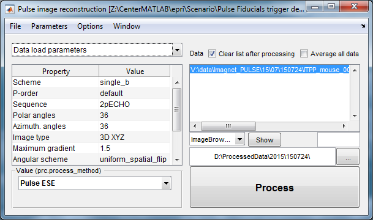
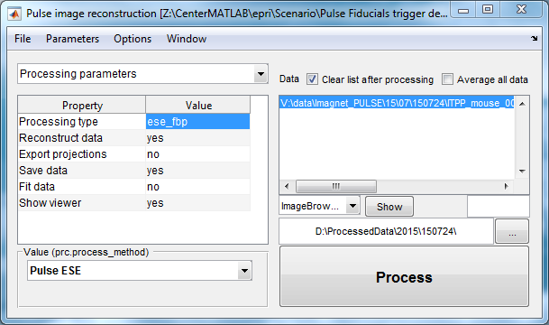
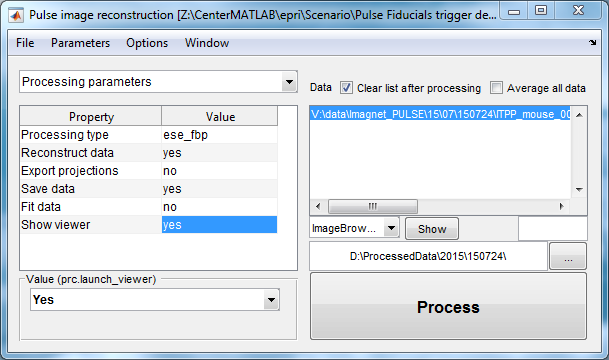

| EPR Imaging Toolbox collection user manual |
ProcessGUI User interface for multi-parameter data processing Syntax: ProcessGUI Description: User interface for multi-parameter data processing. ProcessGUI can load, display, alter parameters and execute the processing script. Parameter definition and value can be loaded using [File/Load Scenario] and [File/Load Parameters] menu choices. Parameters can be saved by selecting [File/Load Parameters] menu. Parameters can be visualized by selecting [File/Export Parameters] menu. This will create a processing_struct in the workspace that can be browsed in MATLAB command window. Each parameter group is displayed in a separate tab Values can be edited in the panel at the left bottom corner. The same panel displays the name of parameter. Data for processing are loaded using [File/Load Data] menu. Multiple data files can be loaded at once. To sum data files prior to processing, [Average all data] checkbox should be selected. ProcessGUI uses two special parameters. The first one is prc.process_method. This parameter specifies the evaluation function. Upon pressing [Process] button the prc.process_method function with necessary arguments will be passed to MATLAB eval function. Syntax: res = evaluation_function(file_name, file_suffix, output_path, pars) res = evaluation_function(file_name_cell, file_suffix, output_path, pars) Description: file_name - full name of the data file (string) file_name_cell - (cell array) of full names of data files file_suffix - string to be added to the output file name (string) this option allows to store results of multiple processing of the same data output_path - the path where to store file (string) file_name will be preserved, file_suffix will be added pars - (structure) of parameter fields, see ProcessGUI toolbox res - any results Second special parameter is prc.launch_viewer. Setting this parameter to 'yes' will pass result of the processing to ibGUI function.  |